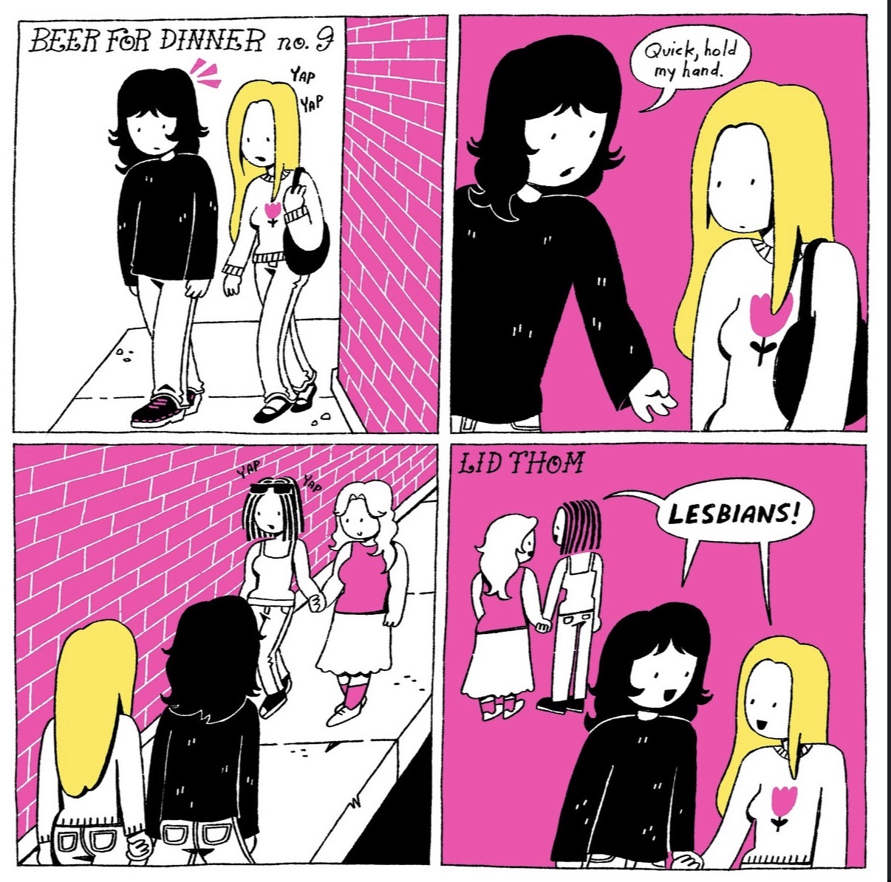
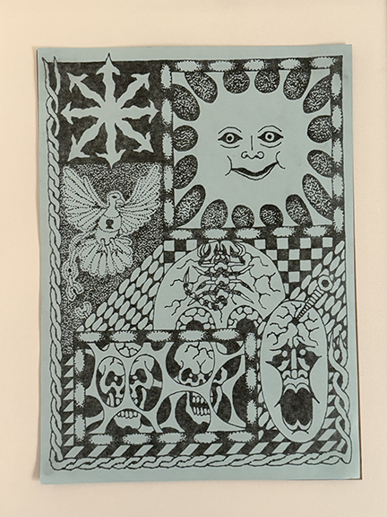
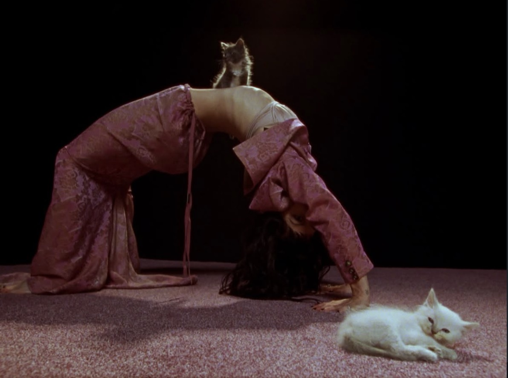

HOME
What Inspires Me?
Hello, my name is Chloe Sabey
These are three artists who inspire me:
Lid Thom

Lid Thom is a multidisciplinary artist, specializing in digital art. Her work portrays slice-of-life scenes showcasing a diverse range of subjects and storylines. I particularly love her bedroom commissions, wherein she portrays stylized subjects in their bedroom. I am inspired by her storytelling. While her figures and elements seem simple and two dimensional, she’s able to capture a specific feeling and essence that brings her meaning across. The color palette always feels mindfully selected, and she’s really fun with composition. She has many works that depict large crowds of individually unique characters. You can get lost in the detail of her work. I admire her endurance as well, one quick glance at her page and you’ll see that she simply does not stop. Seeing artists and designers so motivated to create inspires me to tap into my creative world as well. I also really connect with her typical subject matter: queerness, youth, feminism, and interpersonal conflicts and storytelling are all part of what makes Lid’s work feel personal to me.
Trey Flanigan

I first discovered Trey’s work through Paal World, a small independent clothing brand that showcases handmade, and hand printed graphics. San Francisco puts on a huge craft fair at the Fort Mason Center annually. There are a million booths all competing to catch your attention, and this poster (pictured above) immediately stood out to me and I stumbled towards the Paal World booth. This is where I learned about Trey Flanigan’s illustrations and immediately bought the poster. He is a working tattoo artist and illustrator and has done a ton of commission work for bands, festivals, and independent brands. I was immediately struck by the boldness of design choices on the poster. I love the texture of this piece, some features are stippled, while others are saturated. I am very inspired by art that feels tattoo-ish (if that makes sense). The expression in each of the subjects is striking and haunting. Part of my creative practice includes collecting pieces of other artists work to put up in my space to grab inspiration and motivation from. A lot of that process is a “know it when I see it” method, and this piece was no different for me. However, it’s nice to be given the opportunity to slow down and decipher why exactly I am attracted to an artwork.
Maria Zardoya

Not For Radio is Maria Zardoya (of The Marias) solo project. I’ve been a fan of The Marias from the beginning. Her solo project felt like a delicious deep dive into her creative mind. This projects feels very ethereal and trippy, while somehow grounded and organic. She uses the natural world as a backdrop for her emotional storytelling. The visual storytelling of this project has also been phenomenal. From set designs, to photoshoots, the music video for Kitten, the fashion, and overall mood of this entire work stuns and inspires me. There is a huge team of creatives behind this project, which encourages me to find a place for myself in spaces like these. I love the way she plays with the contrast between the natural world and the mystery of dreamstates and psychedelic experiences.